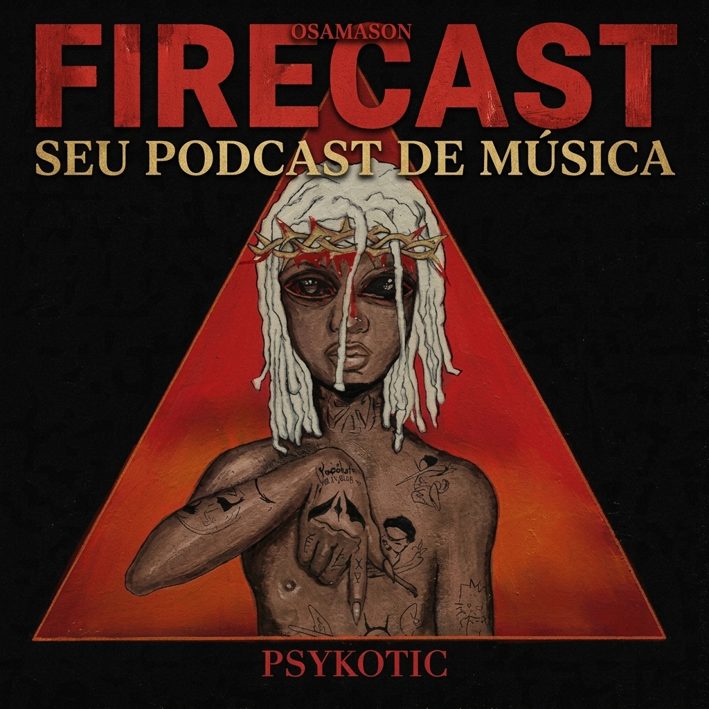

Firecast #42 - Osamason e o caos sonoro: Uma review de "Psykotic"

Aumenta o volume e prepara os graves, porque o episódio de hoje está pesado! No novo episódio do Firecast, nós mergulhamos de cabeça na atmosfera densa, distorcida e hipnótica de 'Psykotic', o mais recente (e talvez o mais divisivo) projeto do rapper Osamason.
Dissecamos faixa por faixa para entender como ele mistura elementos do rage, plugg e batidas experimentais para criar uma identidade única na cena underground atual. Será que 'Psykotic' é o álbum que vai consolidar o nome dele no topo da nova geração, ou é apenas mais do mesmo no mar de distorções do rap atual? Dá o play e vem debater com a gente!